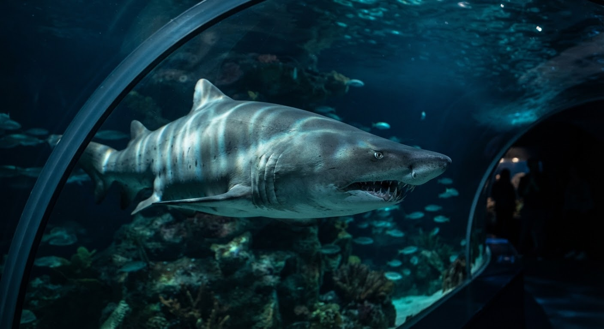
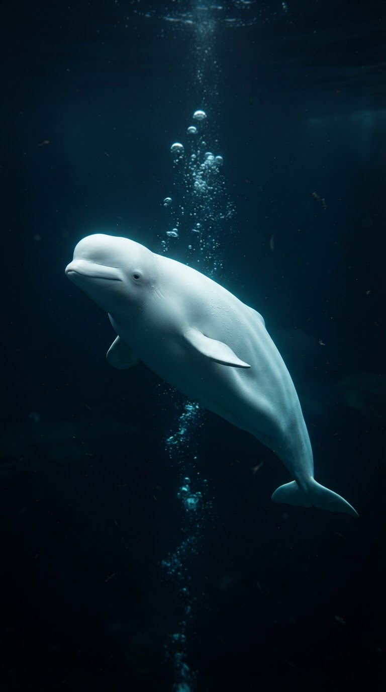
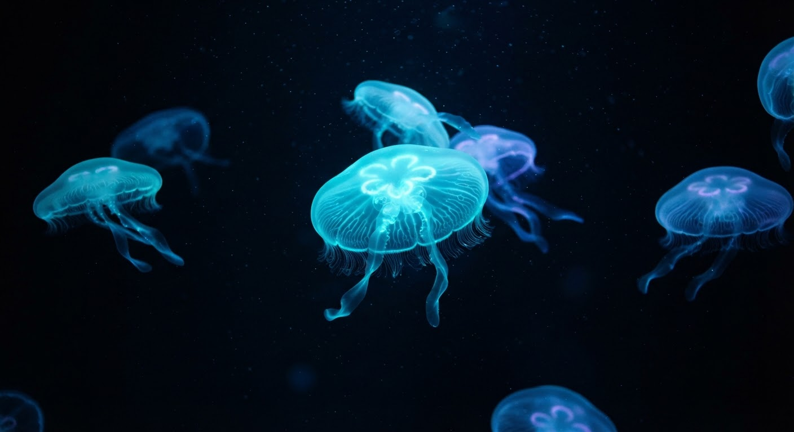
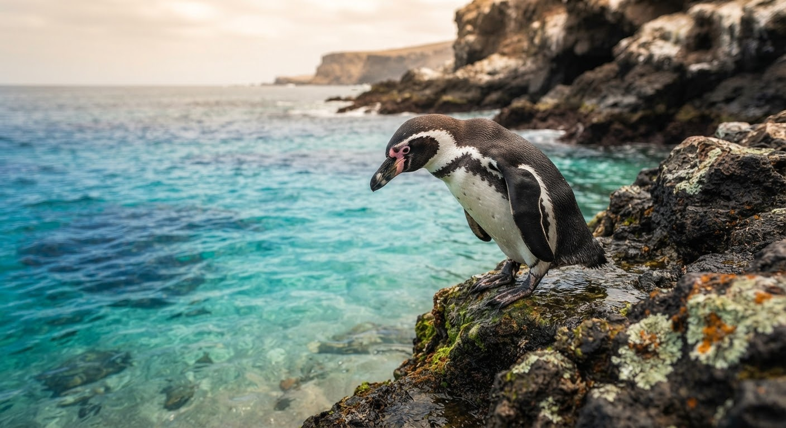
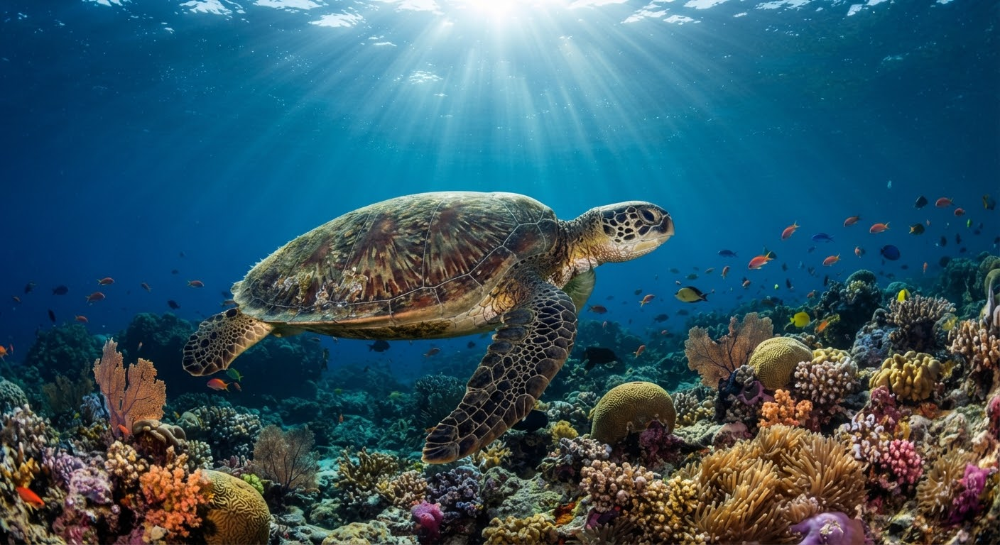
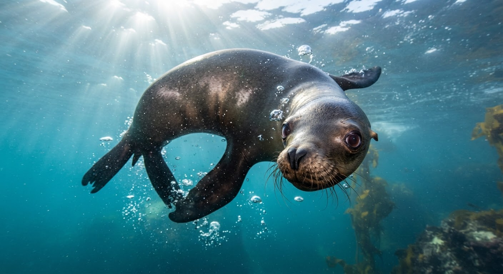
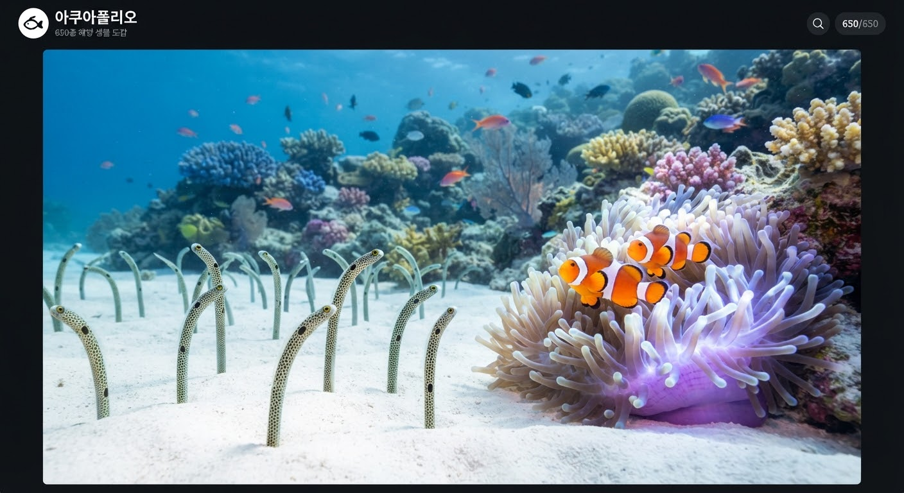
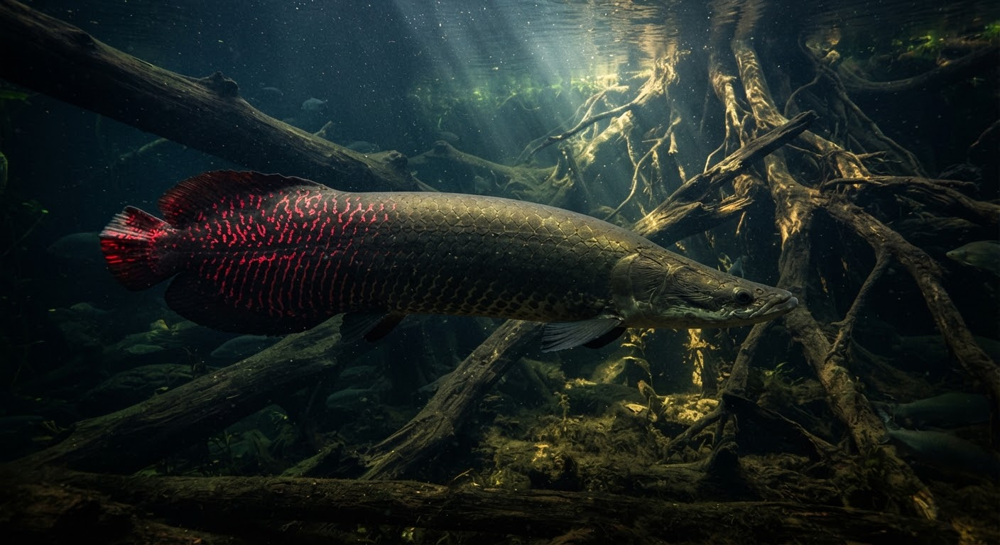
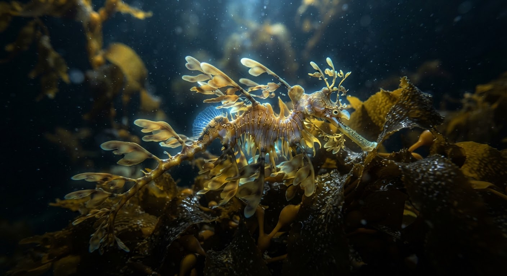

위급 (CR)
B2F 메인수조
Carcharias taurus
샌드타이거샤크
최대 3.2m의 날카로운 턱 구조를 지닌 바다의 최상위 포식자. 수면의 공기를 들이마셔 위 속에 담아 부력을 조절합니다.
수심 10~190m
아쿠아폴리오 생태 연구원들이 기록한 650종 해양 생명체의 실시간 건강 지표, 학술 관찰 일지 및 보존 등급 아카이브입니다.
평균 수질 상태
pH 8.19 • 염도 34.2‰
최적 수온 유지율
99.8% STABLE
검색 결과가 없습니다. 다른 이름이나 분류를 선택해 주세요.

초음파 소통 신호 감지 중
Bio-Sonar Echolocation: 112.4 kHz
Delphinapterus leucas
‘바다의 카나리아’로 불리는 북극해의 지성체입니다. 둥근 멜론(Melon) 기관의 형태를 자유자재로 변형하여 수십 가지 음조의 초음파를 구사하며, 유연한 목뼈 덕분에 사방으로 고개를 돌릴 수 있는 고유한 생태를 지닙니다.
평균 체장
4.2 m
수컷 성체 기준추정 체중
1,240 kg
지방층 45%서식 수온
11.5 ℃
극지 저온 제어"개체 컨디션 양호. 오늘 오전 풍부화(Enrichment) 빙산 얼음볼 놀이 반응 최우수. 고등어 및 오징어 총 18kg 섭취 완료."
TOTAL 8 FEATURED ARCHIVES

Carcharias taurus
최대 3.2m의 날카로운 턱 구조를 지닌 바다의 최상위 포식자. 수면의 공기를 들이마셔 위 속에 담아 부력을 조절합니다.

Aurelia aurita
95%가 수분으로 이루어진 유려한 무척추동물. 4개의 말굽 모양 생식선과 환상적인 유영 리듬으로 관람객에게 깊은 명상을 선사합니다.

Spheniscus humboldti
따뜻한 남미 연안에 서식하며 지상에서는 뒤뚱거리지만 물속에서는 유체역학적 날갯짓으로 시속 30km까지 잠항합니다.

Chelonia mydas
수명 80년 이상의 대형 해양 파충류. 아쿠아폴리오 해양동물전문구조센터에서 치료 후 재활 중인 보존 개체입니다.

Zalophus californianus
지능이 대단히 높고 사회성이 뛰어난 해양 기각류. 앞지느러미로 몸을 지탱해 육상에서도 민첩하게 이동합니다.

Heteroconger hassi
하얀 모래 틈에서 고개를 내밀며 플랑크톤을 포식하는 정원의 풀 같은 장어와 말미잘과 공생하는 산호초의 마스코트입니다.

Arapaima gigas
1억 년 전 형태를 고스란히 간직한 살아있는 화석. 단단한 갑옷 비늘을 두르고 물 밖으로 고개를 내밀어 부레로 공기호흡을 합니다.

Phyllopteryx taeniolatus
해초 조각을 완벽히 모사하는 환상적인 생체 위장술. 수컷이 배에 알을 품어 부화시키는 독특한 부성애 번식 생태를 보여줍니다.
빛이 침투하는 표층 산호초부터 빛이 전혀 닿지 않는 점심해 심연까지, 수심 압력과 조도에 맞춘 특수 전시 수조 구조입니다.
햇빛이 풍부해 광합성 플랑크톤과 거대 산호초 군락이 형성되는 활기찬 바다입니다.
B1F 코랄 가든 & 마린 베이
클라운피시 • 바다사자 • 가든일
희미한 푸른빛만이 닿으며, 생체발광(Bioluminescence)을 시작하는 신비로운 해양종들의 거처입니다.
B2F 펠라직 메인 수조
샌드타이거샤크 • 대양가오리 • 참치군
완전한 암흑과 100기압 이상의 고압 환경. 형광 해파리와 심해 거대 등각류의 보금자리입니다.
B2F 디 어비스 랩(The Abyss)
심해 발광해파리 • 키다리게 • 흡혈오징어
아쿠아폴리오는 단순 전시를 지양하며 WAZA(세계동물원수족관협회) 복지 기준에 의거하여 해양 생명체의 자연 습성과 존엄성을 최우선으로 보장합니다.
650개 수조 전 개체 행동 분석 및 영양 맞춤 공급 시스템 가동
시간당 1,200톤 여과 정화 및 미네랄 밸런싱을 통한 청정 심층수 재현
좌초·혼획된 거북, 물범 등의 긴급 치료 및 자연 방류 프로젝트 주도